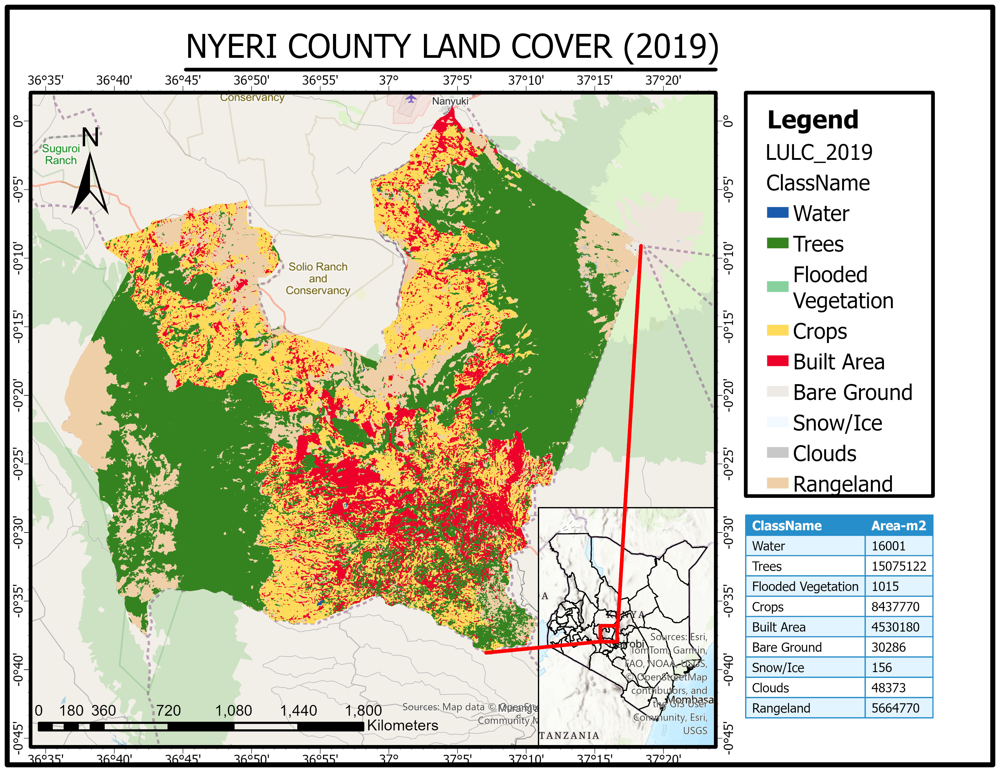
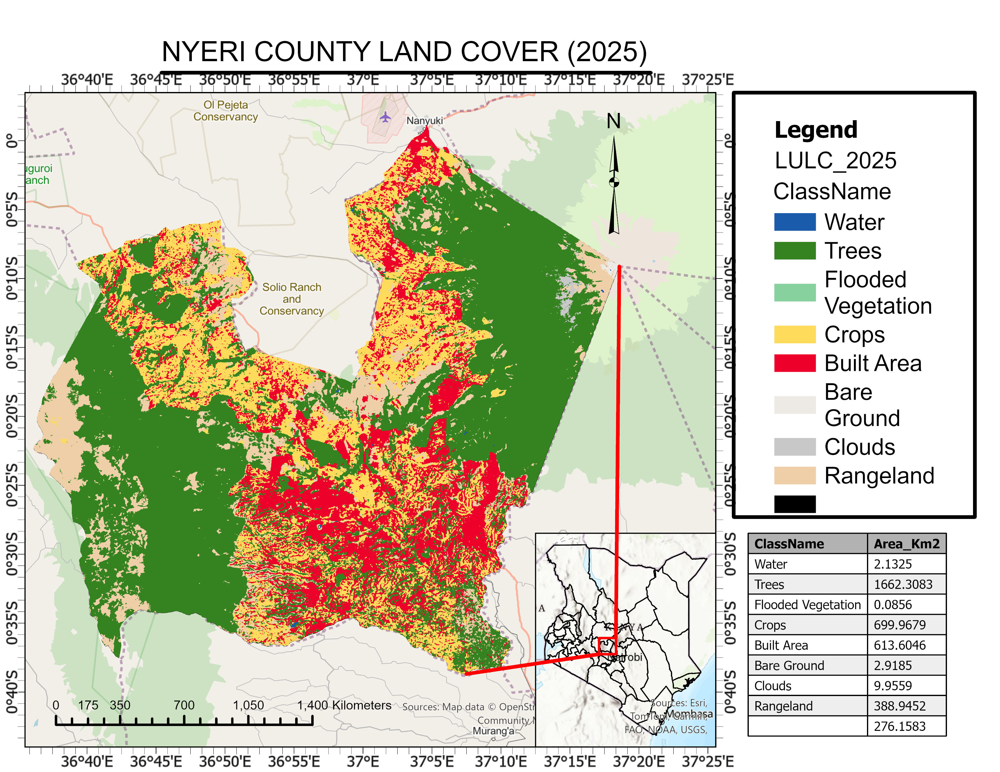

Forest cover dynamics in Nyeri County(2019-2025) a Land Use and Land Cover based assessment.
This project tracks forest cover change in Nyeri County between 2019 and 2025 using ESA WorldCover data in Google Earth Engine. The analysis highlights spatial trends in deforestation and reforestation, revealing notable recovery in key ecological zones such as the Aberdare Ranges and Mt. Kenya slopes.
Objectives
- To assess forest cover distribution in 2019 and 2025
- To quantify forest loss and gain over time
- To support sustainable forest management strategies
Methodology
Data Source
- ESA WorldCover (10m resolution land cover dataset)
- Accessed via Google Earth Engine (GEE)
Tools Used
- Google Earth Engine – data processing and analysis
- ArcGIS Pro – visualization and map production
Processing Steps
- Filtered land cover classes to isolate forest cover
- Clipped dataset to Nyeri County boundary
- Extracted forest class for both 2019 and 2025
Change Detection
- Compared forest extent between 2019 and 2025
- Classified changes into loss, stable, and gain
Analysis
- Computed forest area statistics for both years
- Generated forest change maps
- Analyzed spatial distribution of forest gain and loss
- Focused on ecological zones (Aberdare & Mt. Kenya)
Results & Findings
Forest Change
- Significant forest gain observed in protected areas
- Localized forest loss in agricultural expansion zones
Spatial Patterns
- Reforestation prominent in Aberdare Ranges
- Forest recovery observed along Mt. Kenya slopes
- Stable forest zones within protected reserves
Conclusion & Recommendations
The analysis demonstrates positive forest recovery trends in Nyeri County, particularly within protected ecosystems. However, pressure from agricultural expansion continues to threaten forest edges. Strengthening conservation policies and promoting community-based forest management will be key to sustaining these gains.
Maps & Visual Outputs

